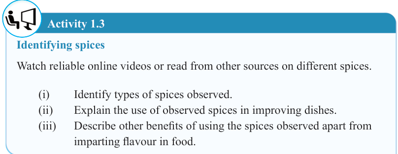
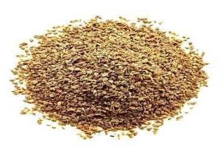
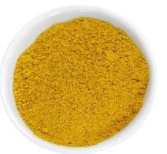
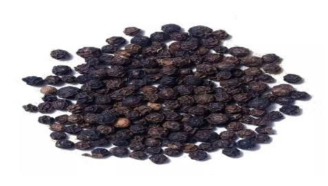

8


Food and Human Nutrition

Form Two
Type of spice
Description
Dishes

Celery seeds
Dried seeds
Chicken curry, fish stew and salad dressing

Curry powder
Powder
Soups and savoury dishes
Paprika
Powder
Vegetables, soups and stews such as meat stew

Black pepper
Dried seeds
Salads and salad dressing, beverages and snacks
Activity 1.3
Identifying spices
Watch reliable online videos or read from other sources on different spices.
(i)
Identify types of spices observed.
(ii)
Explain the use of observed spices in improving dishes.
(iii)
Describe other benefits of using the spices observed apart from
imparting flavour in food.
17/09/2025 16:30